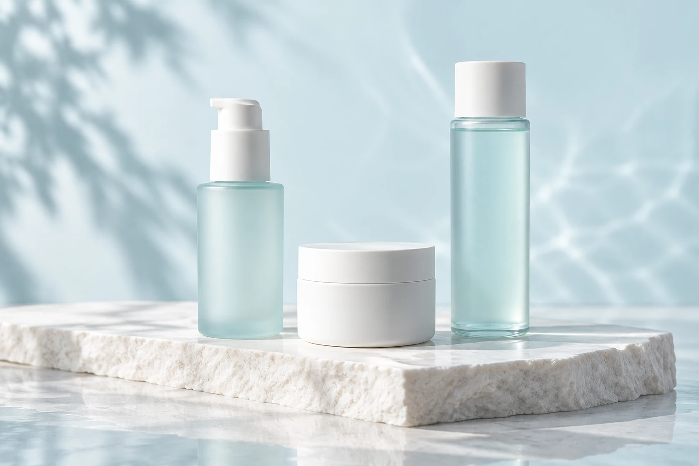
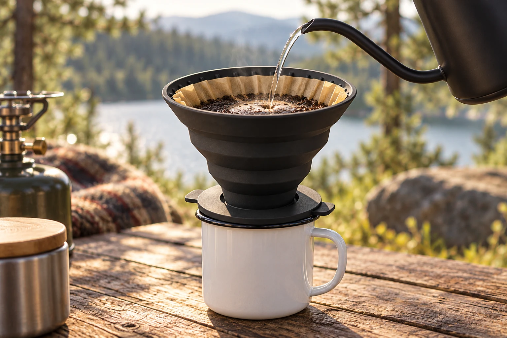

CAFÉ
CAFÉ余白珈琲
自然光と余白で、街の喫茶店の穏やかな時間を。メニューから店舗案内まで、訪れる前の気持ちをつなぐ設計。
余白珈琲を見るSIX FICTIONAL BRANDS. SIX DIFFERENT WORLDS.
日常の一杯から、夜の寄り道まで。
6つの架空ブランドを通して、
世界観と使いやすさの接点を探るウェブサイト集。
6 WEBSITES · 24 PAGES
CAFÉ自然光と余白で、街の喫茶店の穏やかな時間を。メニューから店舗案内まで、訪れる前の気持ちをつなぐ設計。
余白珈琲を見る IZAKAYA
IZAKAYA赤い差し色と大きな文字で、気取らない酒場の賑わいを。料理・宴会・店舗案内へ、迷わずたどれる導線。
大衆酒場 ヨリミチを見る JAPANESE DINING
JAPANESE DINING深い色と繊細な文字組みで、静かな夜の空気を。料理、酒、空間の物語から予約デモへつなぐ構成。
季と肴 澄を見る CULTURAL EVENT
CULTURAL EVENT夕暮れの色とリズムのあるレイアウトで、夜市への期待を。出店者探しと一日の過ごし方をわかりやすく。
夜の余白市を見る
SKIN CARE白と淡い水色、静かな余白で、日々のお手入れを表現。製品の比較からブランドの考え方までを丁寧に。
SUIROを見る
PRODUCT LANDING PAGE自然の風景と道具の質感から、使う場面を想像する。特徴・使い方・仕様を伝え、購入デモへ導くLP。
NOMA DRIPを見るこの一覧と各サイトは、デザイン・情報設計・操作体験を紹介する自主制作サンプルです。掲載の名称、店舗、会場、製品、料金などは制作上の設定で、画像はイメージです。実際の営業・イベント開催・販売・注文受付・決済は行いません。